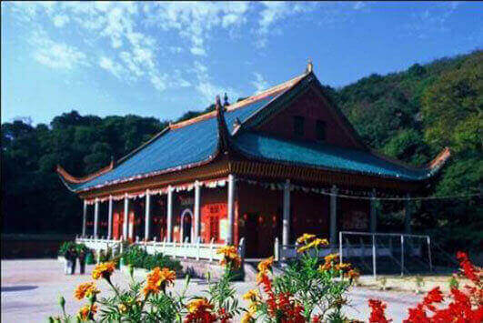
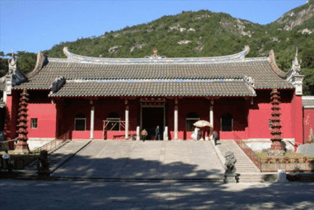
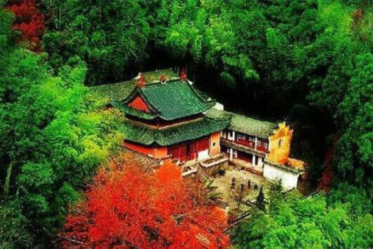
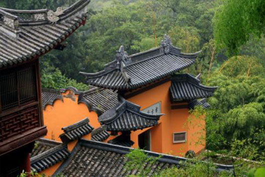
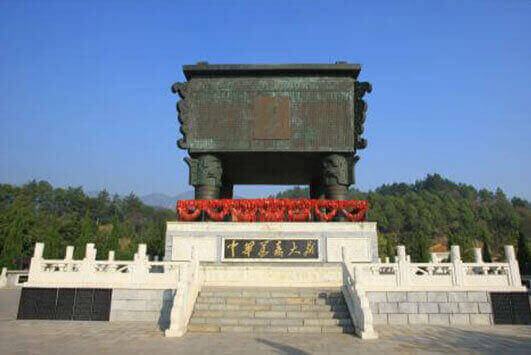
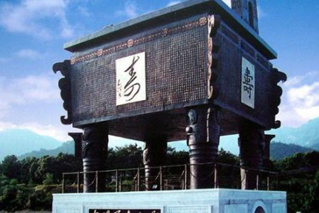
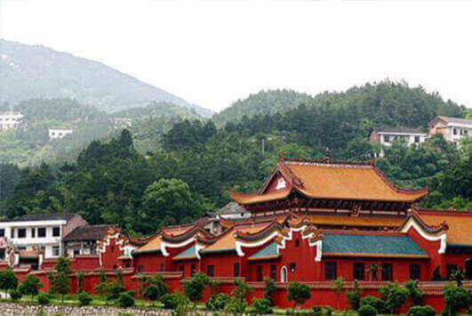
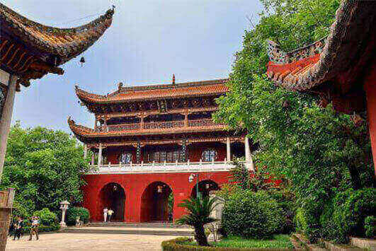

morly旅游网
衡山，又名南岳、寿岳、南山，为中国“五岳”之一，位于中国湖南省中部偏东南部，主体部分位于衡阳市南岳区、衡山县和衡阳县东部。据战国时期《甘石星经》记载，因其位于星座二十八宿的轸星之翼，“变应玑衡”，“铨德钧物”，犹如衡器，可称天地，故名衡山。衡山是中国著名的道教、佛教圣地，环山有寺、庙、庵、观200多处。衡山是国家自然与文化双遗产，国家5A级旅游景区，也是国家级自然保护区。由于气候条件较其他四岳为好，处处是茂林修竹，终年翠绿；奇花异草，四时飘香，自然景色十分秀丽，因而有南岳独秀之美称。
衡山有远古而悠久的文明，是中华文明的重要发源地之一，所有衡山也被人们被称为“文明奥区”。考古工作者在南岳及其附近地区发掘了上千座古墓葬，出土了一大批先秦时代的文物，发现了74处殷商和周代的文化遗址，也为人们探索古代历史提供了重要依据。衡山文化底蕴深厚，有佛教文化、道教文化、福寿文化、书院文化、抗战文化等。佛教文化进入南岳比道家约迟200多年，最早到达南岳的惠海、希遁，是在梁天监年（502~519年）间，随后慧思则于陈光·大二年（568）来岳。道家最早进入南岳的传人为东汉末期张道陵，他自天目山游南岳，谒青玉坛、光天坛，礼祝融祠。南岳是中国五岳之寿山，历来为祈福、求寿之圣地，福寿文化源远流长。衡山书院文化始于唐肃宗时，邺侯李泌赐隐于南岳烟霞峰下读书论道，居处藏书极为丰富，其后李泌之子李繁为随州剌史时，在南岳建南岳书院（现名邺侯书院）以作纪念，时约816-824年，这是我国历史上最早的书院。
衡山风景优美，树木葱茏，郁郁葱葱，花儿草儿各展姿态，尽情地摇曳，欢迎人们的到来。衡山是著名的宗教圣地，有许多寺庙和道观。那里有香火鼎盛的场面，庄严得不容侵犯的神像，置身其中，你会抛去一切杂念，会虔诚的向着神像许下心底最由衷的心愿。在这里人们的心灵会得以净化。在那里你遇到的每一个生命都会是善意的、虔诚的、充满希望的。
衡山有许多值得人们一去的景点，例如藏经殿、方广寺、万寿大鼎、水帘洞、大善寺、南岳大庙等。藏经殿位于湖南省衡阳市南岳衡山的祥光峰下，原名“小般若禅林”，为南岳开山祖师慧思和尚创建。“藏经之秀”是“南岳四绝”风光之一，它是南岳八大景区中最为秀丽多彩的景观∶东有双柱插天的天柱峰，拢翠含黛於五色祥云之中；西有雷祖峰，石岩嶙峋，争奇门异；南边有莲花峰，青莲瓣瓣，绿烟缭云；北方有祝融峰，刺破青天，云腾雾绕。极目远眺，山色空蒙，千姿百态；舒目四望，嘉树奇花，美不胜收。藏经殿前有一片灵田，每当秋夜，飞光如烛，可以照见老林古殿的轮廓，疑似“鲁殿灵光”，实际上是萤虫聚舞，闪闪发光所致，人们又称之为“萤火虫朝圣”。方广寺位于莲花峰下，专为纪念南宋朱熹、张轼到此游览和讲学而建，寺周围有黑沙潭、黄沙源、石漳潭、白沙潭等。“方广寺之幽”也是南岳四绝之一。万寿大鼎，全称“中华万寿大鼎”，位于南岳衡山的驾鹤峰上.被世界吉尼斯确认的“世界第一鼎”，是目前世界上最大、最重、寿字最多的青铜器。鼎壁上铸有10000个不同朝代、不同民族、不同字体写法的“寿”字，意寓中华民族万寿无疆,进一步奠定了南岳衡山“寿岳”、“寿山”的特殊地位，形成了南岳独有的福寿文化内涵。水帘洞位于南岳乡水帘村，古名朱陵洞。水帘洞水源来自南岳紫盖峰顶，流经山洞，汇入6米余宽，深不可测的石洞，水满溢出，垂直下泻，形成瀑布，高60余米。大善寺位于南岳古镇北支街，该寺始建于南北朝，为陈慧思禅师唱道之地。南岳大庙是中国江南最大的古建筑群，有“江南第一庙”“南国故宫”之称，南岳大庙佛道共存，东侧为八个道观，西侧为八个佛寺，堪称我国寺庙一绝，每年八月十五，这里都要举行盛大规模的庙会，不少东南亚的佛国华侨，日本佛教界人士，以及回乡的善男信女，都不惜长途跋涉来此朝拜，因此这里常年香火不息。
交通信息
高铁：京广高铁、湘桂高铁、沪昆高铁全线开通，全国旅客可以乘高铁直达南岳衡山，在衡阳东站下车，可坐衡阳中心汽车站、王江汽车站至南岳旅游专线，全程32公里，票价：18元。
火车：上海南乘坐K759列车在衡阳火车站下车，然后坐衡阳火车站到南岳的公交到达南岳衡山风景区，十分钟一趟，全程38公里，票价10元。
汽车:衡阳中心汽车站有汽车直达南岳汽车站，全程19分钟，然后可乘3路免费公交到达南岳进山门票处。
自驾：京港澳高速、潭衡高速公路、衡桂高速公路、衡邵高速公路、衡昆高速公路、衡炎高速公路，经南岳高速直达南岳衡山风景区。
公交：2路:两路口—人民西路—五一广场—人民中路—新屏大厦—义安路—工商银行—四牌楼—县政府—公安局—城南完小
3路:城南完小—公安局—县政府—四牌楼—工商银行—义安路—五一广场—五一北路—衡山大桥转盘—汽配厂—氮肥厂
藏经殿
藏经殿在祥光峰下，是南朝陈废帝光大二年（568年）慧思禅师所建。由于明太祖赐大藏经一部，存放寺中，所以称为“藏经殿”。
 方广寺
方广寺，在南岳区莲花峰下。寺名方广，取佛说十方广布之意。寺中有宋徽宗写的“天下名山”四字。
 万寿大鼎
中华万寿大鼎是南岳中华万寿坛景区的中心景点，位于南岳衡山的驾鹤峰上。是被世界吉尼斯确认的“世界第一鼎”，是目前世界上最大、最重、寿字最多的青铜器。
 南岳大庙
南岳大庙是中国江南最大的古建筑群，有“江南第一庙”“南国故宫”之称。
 内容整理至网络，如有侵权，请联系我们！1255394075@qq.com